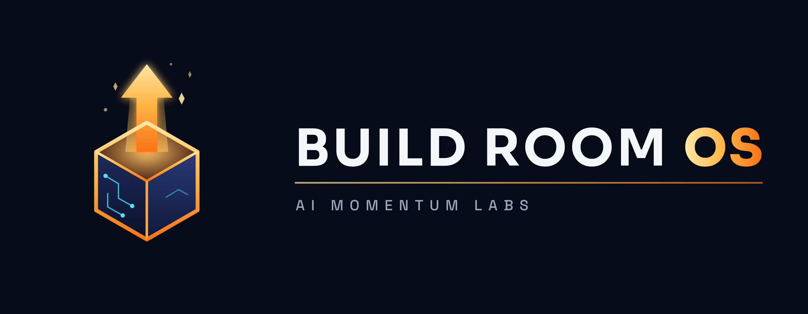

What's new in
Build Room OS
Changes since the November 4 release, plus how to get them.
- A new tool: the Webinar Builder writes the webinar itself
- Slides you can read from across the room, with your notes in them
- A scorecard after every rehearsal and every live run
- On the Build Room connector? You already have it
Since last week
What's new, in plain words
1. The Webinar Builder NEW
It writes the webinar itself, in your own words: a live 60-minute talk that says up front there will be an offer, teaches three things that each answer their own question, makes your offer exactly as you priced it, answers the questions people really ask (time, money, "can I do this?", "I need to ask my husband"), and finishes on time.
2. Everything you need for the day
Slides with large type and strong contrast (your prompts are in the notes), a sheet for whoever runs the chat, the words for your registration page, and a one-page "what's on offer" people can keep.
3. It checks before you go live, and coaches you after
Before the day it checks every price and date against your offer, that each client story has permission, and that nothing pretends or pressures. After a rehearsal or a live run, bring Zoom's files and it shows you when the offer started, what ran long, who left where, and the questions nobody answered, then drafts the next version for you to approve.
4. Your printed guide has a new page
Say These Words now has eight pages; the Webinar Builder is page 6.
Good to knowYour Business File gained one line in §20 for your webinar. You don't have to do anything; the tool fills it in. Thirty-seven tools now.
Try the new thing first
Try the Webinar Builder
On the connector, or already updated (page 4)? Then:
- See a short demo first. Type: Show me how the webinar builder works. Nothing is changed; it's a tour.
- Start for real. Type: Build my webinar. It writes the talk with you, one part at a time.
- Pick a moderator. A spouse, an assistant or a friend. They run the chat and post the links; the tool writes their sheet.
- Make the slides. Type: Make my webinar slides.
- Rehearse once on Zoom, with the recording and transcript on. Then type: Rehearse my webinar and give it the transcript.
- After the real one: How did my webinar go? with Zoom's transcript, chat and attendance files.
Honest by designNo recording shown as live, no invented head counts, no planted questions, no countdowns that reset, no money results without the typical result. A recorded version comes only after a live run has sold, and says it's recorded.
Already installed?
Get this week's version
On the Build Room connector? Nothing to do: the Webinar Builder is already there. Start a new chat and say Build my webinar.
Using the Build Room OS folder? Update it this way. Your Business File and everything you've made stay exactly as they are:
- Download
BuildRoom_OS_2026-11-11.zip from the Members' area.
- Unzip it there. Mac: double-click the file. Windows: right-click it and choose Extract All, then Extract. Don't unzip it over your old folder.
- Run the update and point it at your Build Room OS folder (drag the folder into the window to paste its path):
Mac: bash ~/Downloads/BuildRoom_OS/update.sh "/path/to/your/BuildRoom_OS"
Windows: powershell -ExecutionPolicy Bypass -File "$HOME\Downloads\BuildRoom_OS\update.ps1" "C:\path\to\your\BuildRoom_OS"
- Read what it says. It replaces only the tools, keeps a backup, and confirms your Business File is unchanged.
Stuck?Bring it to the next Build Room session. An update never touches your Business File.